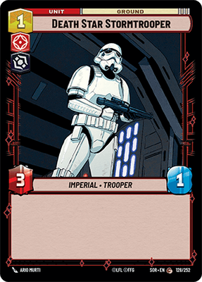
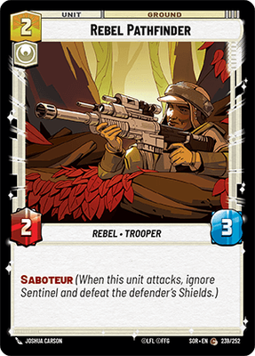

INTERACTION LAB · SCRIPTED FIXTURES
Read the tradeoffs ↗Familiar controls. Optional dragging.
No extra clicks or confirmations. Hover to read; right-click or long-press to inspect.
MORGANOpponent · 12 / 30 base damage

Draw 18 · Discard 2SPACE
GROUND
YOU4 / 6 ready resources

Draw 19 · Discard 2YOUR HAND
Real catalog card faces. Fixed prompt fixtures; no rules engine or multiplayer connection. Reset is a study control, not an in-game takeback.